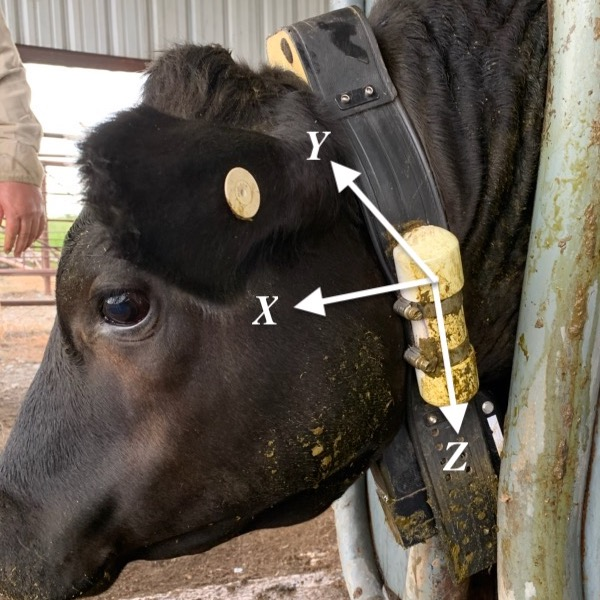
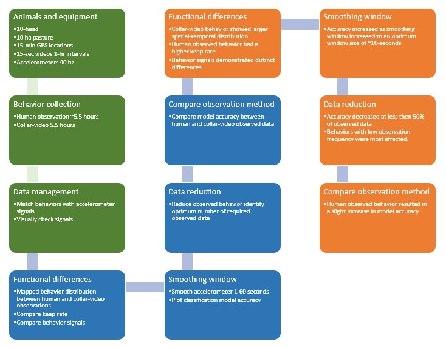

Behavior classification is an essential component of precision animal management systems to identify changes of animal’s metabolic energy and health status. Animal worn accelerometers produce distinct behavioral signatures which can be accurately classified using sophisticated machine learning methods such as random forest decision trees. The primary objective of this study to identify accelerometer signal separation among parsimonious behaviors. We achieve this objective by 1) identifying the optimal window size for signal pre-processing, 2) demonstrating the number of observations required to achieve the desired level of model accuracy, and 3) comparing the accuracy of random forest models developed using either continuous observations collected via a human observer or video collar. As part of a broader project linking ecological variables with animal growth and fitness, southern influenced crossbred steers (Bos taurus indicus; n = 10) were fitted with GPS collars (Vectronic) containing a video camera, and a tri-axial accelerometers (read-rate = 40 HZ).

Continuous behavioral observations were collected on 2 separate days (5 hours), while collar videos from one week were decoded (5.5 hours, 41,549 seconds of behavior). Resting and grazing were the most observed behaviors, followed by walking, ruminating, and grooming; however, grooming was only observed during human observation.

Collar video behavior was more temporally and spatially distributed, with a greater proportion of high energy behaviors observed. Distinct behaviors from accelerometer signals, particularly for grazing were apparent because of the head down posture. Increasing the smoothing window size to 10-seconds improved classification accuracy, and a reduction in the number of observations below 50% resulted in a decrease in accuracy for all behaviors. These results demonstrate the future utility of accelerometer derived behavior observation in free ranging animals, as well as the opportunity provided by animal borne camera systems to capture a greater distribution of animal behavior.
Grazing
Walking
Resting
Ruminating